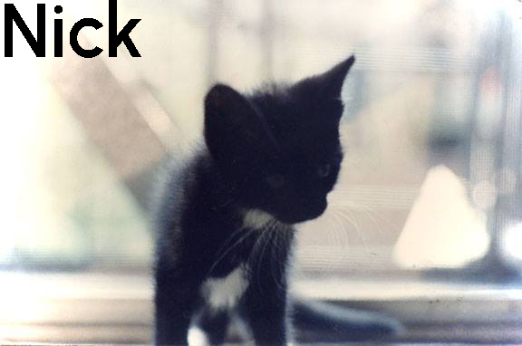
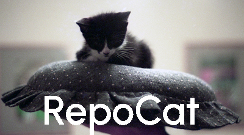
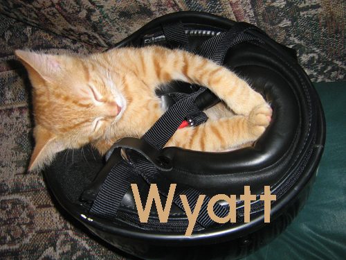
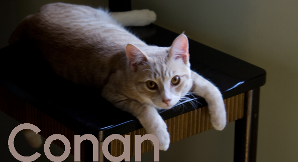

<!DOCTYPE html>
<html lang="en"></html>
<html>
<head>
<title>Personal Site Project Home Page</title>
<link href="https://cdn.jsdelivr.net/npm/bootstrap@5.3.2/dist/css/bootstrap.min.css" rel="stylesheet" integrity="sha384-T3c6CoIi6uLrA9TneNEoa7RxnatzjcDSCmG1MXxSR1GAsXEV/Dwwykc2MPK8M2HN" crossorigin="anonymous">
<link rel="preconnect" href="https://fonts.googleapis.com">
<link rel="preconnect" href="https://fonts.gstatic.com" crossorigin>
<link href="https://fonts.googleapis.com/css2?family=Urbanist:wght@300&display=swap" rel="stylesheet">
<style>
    
  body{
    font-family: 'Urbanist', sans-serif;
    font-size: 18pt;
    height:100vh;
  }
 div h1{
    font-size: 4rem;
    color:#2439DB;
     }

 .ref{
  font-style: italic;
  color:#2439DB;
 }

 h2{
  font-weight:700;
  color:#2439DB;
 }

</style>

</head>

<body>

<div class="px-4 pt-5 my-5 text-center border-bottom">
    <h1>My name is Rose</h1>
    <div class="col-lg-8 mx-auto">
      <p>This is the story of four kitties, and some stuff about me. This is one of the capstone projects in Udemy's <span class="ref">The Complete 2023 Web Development Bootcamp</span>, 
        taught by Dr. Angela Yu.</p>
      <p>The assignment was to create a website with personal and professional profiles, using only html and css. Here, I've put together my design and layout using flexbox, grid, and bootstrap. 
        All images are my own.</p>
      <p>This has been a fun refresher so far, and I look forward to the next part of the course and adding some advanced functionality to this basic site. And perhaps updating the Cat Ipsum
        to actual stories about my cats.
      </p>
      <div class="d-grid gap-2 d-sm-flex justify-content-sm-center mb-5">
        <button id="nick" type="button" class="home btn btn-success btn-lg px-4 me-sm-3">Take Me to the Kitties</button>
        <button id="resume" type="button" class="home btn btn-warning btn-lg px-4 me-sm-3">About Me</button>
      </div>
    </div>


    <div class="overflow-hidden" style="max-height:100vh;">
      <div class="container px-5">
        
        
        
        
      </div>


      
    </div>
  </div>
  <script src="https://ajax.googleapis.com/ajax/libs/jquery/3.7.1/jquery.min.js" charset="UTF-8"></script>
  <script src="./index.js"></script>
</body>
</html>
